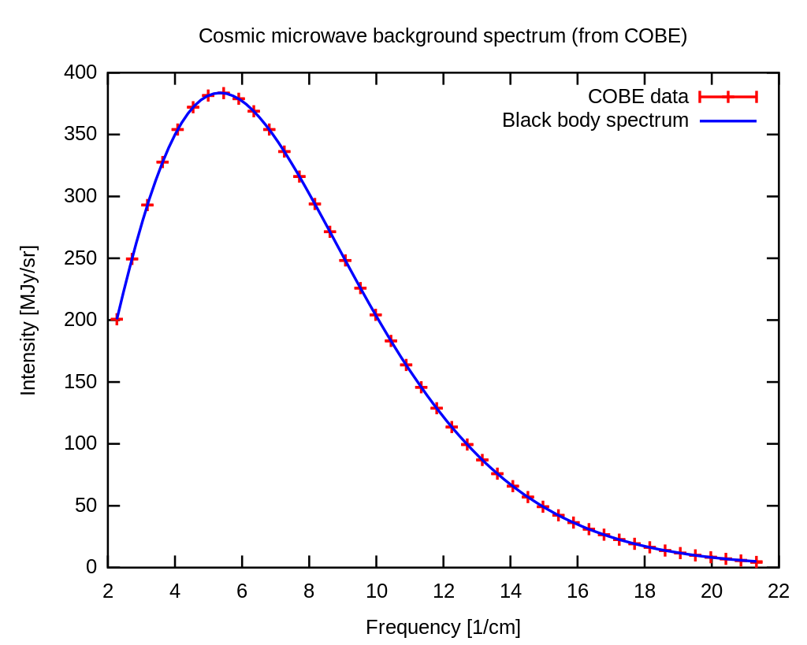
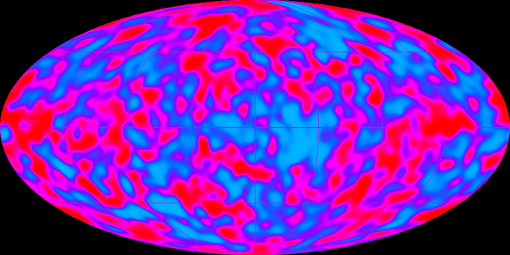
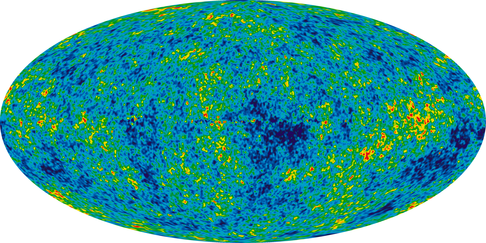
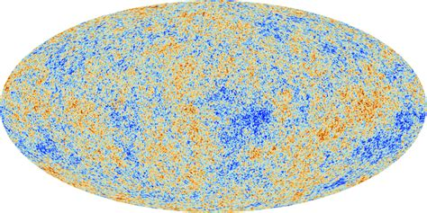

The work I do is ultimately utilized to analyze and make sense of the Cosmic Microwave Background (CMB). The CMB is a phenomenon first proposed by Ralph Alpher and Robert Herman.
This prediction hypothesizes that if the big bang theory is to be believed, and it was at the time, then it would have caused such a strong mark that could still be seen today. Gamow, Alpher, and Herman proposed that there would be essentially an isotropic background radiation throughout the entire universe as a remnant of the catastrophic event of the big bang.
This wouldn't be experimentally confirmed until the 1960s when Arno Penzias and Robert Wilson, accidentally discovered the signal on their radio telescope to be around a static 3K.
This 3K mark puts it square in the microwave range. David Wilkinson, Peter Roll, and Robert Dicke (WRD), predicted that this could be measurable and built their own instrument a year before Penzias and Wilson's discovery but actually made the measurement two months after the duo. While P&W never understood their own data or what it meant, after the explanation given by WRD, P&W were given the nobel prize.
Regardless of the drama, the background signal itself had been found and all but confirmed the theory put forth by Alpher and Herman. However, this wasn't the end of the story. Because the universe was so close together, quantum fluctuations, would have been dominant in the early early universe. This means the isotropic background that we had expected would likely have some bits of anisotropies, that is parts of the background where it isn't exactly 3K. Of course, this was meaningless in the 1960s and 70s where the measurement was 3.5 ± 1 K. The anisotropies that arose from the quantum fluctuations would be at least milli Kelvin if not less.
Fast forward to the 1990s, and George Smoot leads a team to analyze the CMB to see if we can measure those temperature anisotropies. This culminated in the COBE project and spaceprobe. The hallmark of this mission was two incredible images. one of the blackbody spectrum of the CMB:

COBE blackbody spectrum
And another of the temperature anisotropies:

COBE temperature anisotropies
The result was a perfect fit to a blackbody spectrum of a 2.7K source. This discovery also resulted in a nobel prize for Smoot.
Since Smoot, there have been a couple of significant updates in the CMB field. The Wilkinson Microwave Anisotropy Probe (WMAP) collaboration built upon the work of Smoot and culiminated in this temperature anisotropy.

WMAP temperature anisotropies
Finally, the latest update was the Planck collaboration from 2009-2013. This is the current cutting edge of CMB anisotropy research, with multiple papers written about various aspects of the mission.

PLANCK temperature anisotropiesPlanck Collaboration 2018